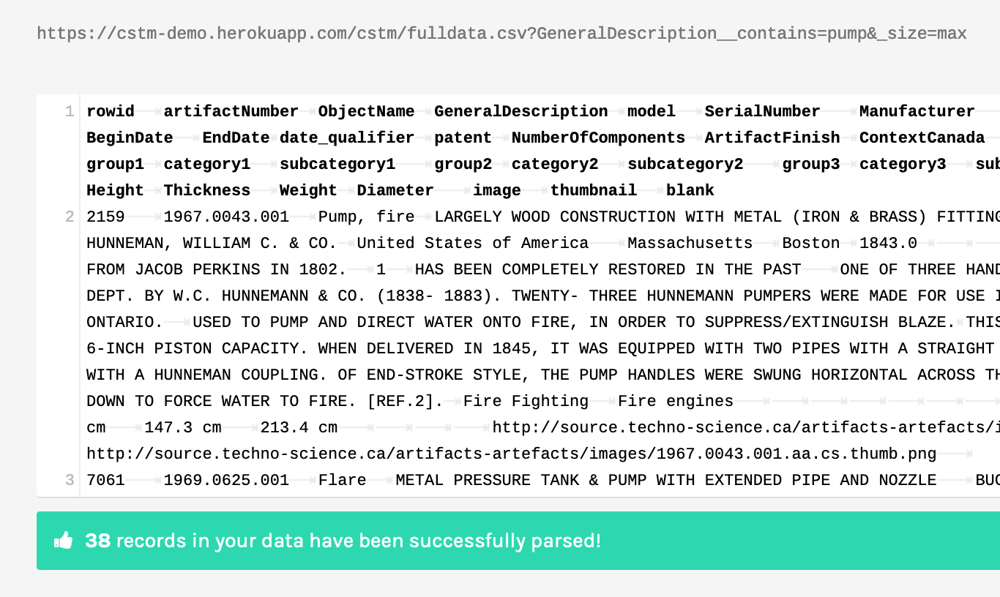

So What Can You Do With an API Anyway?
At this point in the class, you’ve started wrestling and wrangling the physical records describing some of the materials in our three partner museums. You’re thinking through how to digitize this material - or you should be, make sure to read the relevant how-tos! - and how to organize it into a flat table. You have guidance on how to publish this data online. But… you might be quietly worried about what one does with such data, once it’s online. What’s the point of this, your inner voice says quietly to you at the end of a long day…
…it is totally ok to feel like that, to hear that inner voice and agree with it. In this walkthrough, I want to gesture towards some of the things that one can do once data escapes online via an API.
APIs are About Communication
An API - an application programming interface - you’ll recall is just a way of opening up a programme so that another programme can interact with it. That is, instead of an interface meant for a human to interact with the machine, there’s an API to allow some other machine to interact with this one. If you’ve ever downloaded an app on your phone that allowed you to interact with Instagram (but wasn’t Instagram itself), that interaction was through Instagram’s API, for instance.
A good API will also have documentation explaining what or how to make calls to it to get the information you want. My demo API with the Science and Technology Museum is not yet documented. But we can deduce a few things by interacting with its webpage.
Go to https://cstm-demo.herokuapp.com/cstm/.
A Quick Search Using Our API
The mining industry - and indeed, many industries - would not be possible without the humble pump. Imagine you were researching the evolution of pump design and the history of the technology. Our API might be really useful for you. How many pumps does the museum have? Where are they from, and when? Are there meaningful differences between American and Canadian designs?

Build a filter to retrieve all the data on pumps. Which columns do you filter on? Take a look at the url once you’ve hit ‘apply’. Mine looks like this:
https://cstm-demo.herokuapp.com/cstm/fulldata?ObjectName__contains=pump
and it retrieves 173 rows of data.
What happens if you filter on two columns? How does the URL change? Everything after the ? is how we programmatically get data out of our API. We might write a program that downloads all the pump records, and checks every so often to see if new material is out there. Or maybe it grabs that data, and uses what it finds to search a different API for say images, then mashes the two together to create a new webpage.
going a bit further If you have two filters applied, the & in the URL functions as an ‘and’ statement: only rows that satisfy both conditions will be returned. What if you wanted an or? In datasette, you need to do that as an sql query, so click on the ‘View and edit SQL’ link and see if you can work out where to switch ‘and’ for ‘or’.
So What’s The Big Deal? Comparing an API to a Scraper
Fair question. Compare what we did above with trying to get anything out of Library and Archives Canada database of Naturalization Records. Look at that url: http://www.bac-lac.gc.ca/eng/discover/immigration/citizenship-naturalization-records/naturalized-records-1915-1951/Pages/search-naturalization-1915-1939.aspx See the .aspx? That’s telling us that LAC is using the Microsoft product ASP.Net to generate its website from its database. It’s also indicating to us that there is no API. In this notebook Tim Sherratt walks us through screen-scraping the results of searches in LAC to create a dataset, and the fudges and kludges he has to build to put together a dataset.
In fact, let’s take a moment and consider scraping. Let’s say you wanted to create a little app to compare photos of Roman pottery with a database of Roman pottery types. You need some image data. Potsherd.net has a lot of data; you can explore it at http://potsherd.net/atlas/potsherd. But… they don’t have an API, so we’ll have to scrape it (which also brings up interesting copyright issues). If only they had an API with a license so we could easily and correctly grab the information we need!
There are Google chrome plugins that will scrape pages for you… but you really don’t know what they’re doing under the hood. So here’s a little programme that does the trick, written in Python (which you have to have installed on your machine to make it work; you can get it here).
My little program uses some Python building blocks or ‘packages’. It uses a package called ‘requests’ to handle loading up a webpage, a package called ‘csv’ so that we can write our results to a file, and a package called ‘Beautiful Soup’ to read and understand the html so we can just grab the information we want from within the relevant html tags (eg, data in a table will be wrapped within <tr></tr> html tags).
Follow along, or give it a shot - open a text editor and start a new file. First thing we’ll do is import some modules that make life easier:
from bs4 import BeautifulSoup
import csv
import requests
r = requests.get('http://potsherd.net/atlas/Ware/')
soup = BeautifulSoup(r.content, "html.parser")
We create a variable r that tells python we want it to go out onto the web and retrieve the html at that location; we then tell python to pass the html to BeautifulSoup for processing. Next, we tell the program to create a new csv file for us to use as our output container:
f = csv.writer(open("output.csv", "w"))
f.writerow(["Domain", "Path"]) # Write column headers as the first line
Then comes the magic. We tell python, via BeautifulSoup, to look in the html for a table (having studied the html of our target site, we know that the links to the individual ware pages are organized using html table tags) and then grab the information contained in the a tags:
trs = soup.find_all('tr')
for tr in trs:
for link in tr.find_all('a'):
fulllink = link.get ('href')
print (fulllink) #print in terminal to verify results
f.writerow(["http://potsherd.net/atlas/", fulllink]) # Write column headers as the first line
et voila. Save all that as potbot.py, and from the terminal, run it:
$ python potbot.py
A new file ‘output.csv’ is created with two columns. The first column contains http://potsherd.net/atlas/ and the second column contains the rest of the paths we want. Delete all the commas and delete the header row; save as urls.txt and we can then use wget (assuming you’ve got it installed on your machine) like so:
wget -r -w 2 --limit-rate=20k -A jpeg,jpg,bmp,gif,png -i urls.txt
This command tells wget to follow the paths in the input file urls.txt, to wait a moment between requests, to limit the amount asked for each time, and to only keep images. Go get a coffee, come back later, and you’ll have a lovely directory of data.
Out of the API to Somewhere Else
Phew. Let’s not scrape for museum data. But note that many museums do not have APIs; they might have a collection you can search, but you’ll have to build some sort of scraper to get the data. Returning to our API and the result of our search:
https://cstm-demo.herokuapp.com/cstm/fulldata?ObjectName__contains=pump
In what follows, I’m not going to ask you to do any programming. Instead, we’re going to get our API to expose the results of our search as a csv file, which we’ll then feed into a different website.
See the ‘csv’ link on the page? Click that. Your page reloads with pure csv, like this. Notice how the URL has changed - there’s now a .csv right there after ‘fulldata’ and before the ‘?'. If you deleted the csv in the url and replaced it with json, you get the same data again in json format.
Copy the URL for the CSV representation of your search results. Open a new browser window at https://app.rawgraphs.io/. RAWGraphs is an open source tool for making a number of different kinds of visualizations. See the ‘load your data…. from url’ button on the left? Click that, and then put the URL to your csv data in the box and hit enter. It will load up and display the data in the box, saying that your data has been successfully parsed.


Scroll down though to where it says ‘Map your dimensions’. Each of these blocks represents a different facet of your data; it also tells you what kind of data you’re dealing with. For instance, for ‘ManuCountry’ it says ‘string’, and for ‘BeginDate’ it says ‘number’. But if you go down to where it says ‘Length’ and ‘Width’ and ‘Height’, these are also strings! What gives? Well, the original data had ‘cm’ beside it, and so RAW knows that mixed letters and numbers are strings. Thus you wouldn’t be able to graph those dimensions. The solution is to go back up to your data in RAW, copy it all, paste it into a text editor like Atom or Sublime, search for ‘cm’ and replace it with nothing. Then copy the data in your editor and paste it back into RAW.
No matter how much data cleaning you do, there will always be more

Now that that problem is fixed, scroll down to the kinds of visualizations on tap, and select one. I tried the ‘alluvial’ diagram, to see how different categories of my data interrelate. After selecting ‘type’, you scroll back to ‘map your dimensions’ and drag and drop as appropriate.


Explore our CSTM data using RAWGraphs. Imagine the kinds of questions you could now ask and answer. In fact, go back up to our opening questions: can you answer them?
GLAMWorkbench
Now we’re going to head over to Tim Sherratt’s GLAMWorkbench to explore the National Museum of Australia API. Tim uses computational notebooks to do this and to walk us through the process. These notebooks are like annotated computer programs, so we can run each piece of the program one step at a time to understand how the code works and what we are doing. Tim’s notebook shows us how to explore objects over time and over space in that collection. (And you’ll recall that I’ve got a simple notebook showing how to just download stuff from our Datasette API as part of a program here.)
Building a Website Populated With Data from an API
The Programming Historian has a tutorial that will walk you through how to build a website whose content is pulled from the Europeana API, one of the most comprehensive collections of cultural heritage materials:
Europeana Collections provides access to over 50 million digitised items – books, music, artworks and more – with sophisticated search and filter tools to help you find what you’re looking for.
Our dedicated thematic collections on art, fashion, music, photography and World War I contain galleries, blogs and exhibitions to inform and inspire.
So why don’t you give that tutorial a whirl, using the API I put up for the Science and Technology Museum? Maybe something that incorporates all of those images it has.
If you do follow that tutorial, note that it uses PHP as the language to generate the dynamic webpage you are coding. You’ll have to have hosting somewhere if you want to put it online. I can help you with that.
Conclusion
This discussion is meant to give you an idea of the kinds of things that could be done once we get data online and exposed to the rest of the internet through an API. A well-formed API makes publishing your data easier, makes your data more useful, and allows you to exercise some control over how your data gets out in the world. Nobody wants to build scrapers.